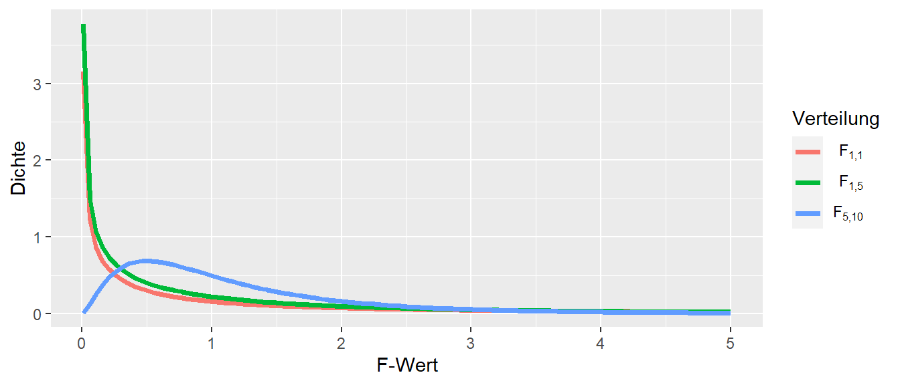
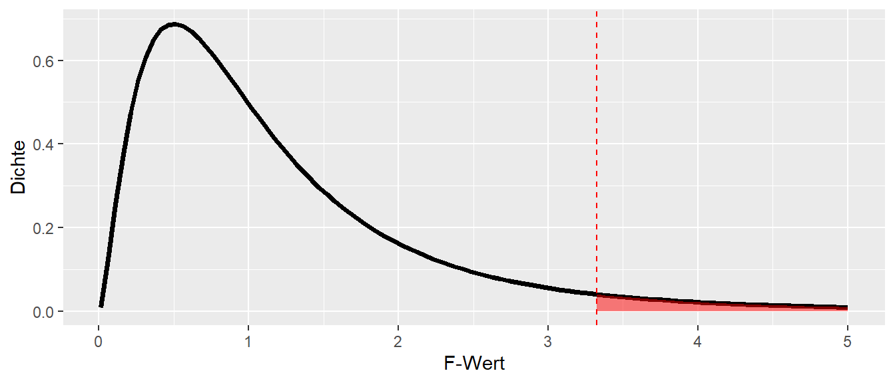
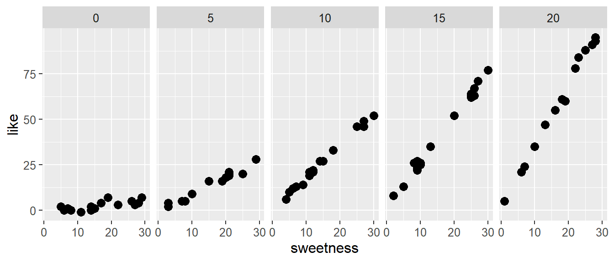
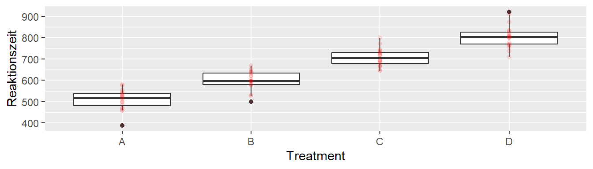

Bisher waren wir damit beschäftigt unsere Modelle Stück für Stücke immer komplizierter zu machen. Angefangen haben wir mit dem einfachen linearen Modell, das dann zum multiplen linearen Modell mit mehreren \(x\)-Variablen wurden. Die \(x\)-Variablen konnten im nächsten Schritt miteinander interagieren, während dann im letzten Schritt die Anforderung aufgehoben wurde, dass die \(x\)-Variablen kontinuierlich sein mussten, sondern auch nominal sein konnten. Durch die Kombination von verschiedenen Variablen sind wir nun in der Lage auch komplexe DGP abzubilden. Im Kern wurde aber letztendlich immer das einfache Modell, die Punkt-Steigungsform, aus der Schule, beibehalten. Im folgenden Abschnitt werden wir nun eine direkte Verbindung zwischen dem Regressionsmodell und der Varianzanalyse erarbeiten.
19.1 Genereller Linearer Modell Testansatz
Wir beginnen mit einem einfachen Modell, das wiederum nur eine \(x\) und eine \(y\)-Variable hat.
mod0 <-lm(y ~ x, simple)summary(mod0)
Call:
lm(formula = y ~ x, data = simple)
Residuals:
1 2 3 4
-0.5817 0.9898 -0.2345 -0.1736
Coefficients:
Estimate Std. Error t value Pr(>|t|)
(Intercept) 1.8414 0.7008 2.628 0.119
x 0.4574 0.3746 1.221 0.346
Residual standard error: 0.8376 on 2 degrees of freedom
Multiple R-squared: 0.4271, Adjusted R-squared: 0.1406
F-statistic: 1.491 on 1 and 2 DF, p-value: 0.3465
D.h. hier ist jetzt zunächst einmal nichts Neues dazukommen. Schauen wir uns aber noch einmal genauer die Residuen, d.h. die Abweichungen von der Regressionsgeraden, an. In der Besprechung des Determinationskoeffizienten \(R^2\) haben wir schon Quadratsummen und deren Unterteilung kennengelernt. Dort hatten wird die Aufteilung der Varianz von \(Y\), bezeichnet als \(SSTO\), in die beiden Komponenten Regressionsvarianz \(SSR\) und Fehlervarianz \(SSE\) besprochen. Es gilt.
\[\begin{equation}
SSTO = SSR + SSE
\end{equation}\]
Die Fehlerquadratsumme SSE, die Summe der quadrierten Abweichungen zwischen dem beobachteten Wert \(y_i\) und dem vorhergesagten Wert \(\hat{y}_i\) ist definiert mittels:
Um die Werte \(\hat{y}_i\) berechnen zu können, benötigen wir unser Modell bzw. die Modellkoeffizienten. Das einfache Regressionsmodell hat zwei Parameter, die beiden Koeffizienten \(\beta_0\) und \(\beta_1\). Formalisierung wir die Parameteranzahl indem ihr ein Symbol spendieren, per Konvention meistens das Symbol \(p\). In unserem Fall ist gilt daher \(p = 2\). Die Anzahl der Parameter \(p\) ist verknüpft mit den sogenannten Freiheitsgraden \(df\) (degrees of freedom). Die Freiheitsgrade von \(SSE\) berechnen sich mittels der Formel \(N-p\), wobei \(N\) die Anzahl der Beobachtungen, der Datenpunkte ist.
\[\begin{equation}
df_E := n - p
\end{equation}\]
Die Freiheitsgerade bestimmen die effektive Anzahl der Beobachtungen die zur Verfügung stehen um die Varianz \(\sigma^2\) des Modells abzuschätzen. Dadurch, dass zwei Parameter anhand der Daten für das Modell bestimt werden, fallen zwei Datenpunkt als unabhängige Informationsquellen weg. Anders ausgedrückt, wenn ich die beiden Modellparameter, in unseren Fall \(\beta_0\) und \(\beta_1\) kenne, dann sind nur noch \(N-2\) Datenpunkt frei variierbar. Sobald ich die Werte von \(N-2\) Datenpunkten und die beiden Parameter kenne, kann ich die verbleibenden beiden Werte berechnen. Daher die Begriff der Freiheitsgrade.
Wir nun \(SSE\) durch die Anzahl der Freiheitsgerade teilen, dann lässt sich zeigen, das dieser Wert ein erwartungstreuer Schätzer für die Residualvarianz \(\sigma^2\) unter der Verteilungsannahme \(\epsilon_i \sim \mathcal{N}(0,\sigma^2)\) der Daten ist. Das Verhältnis von \(SSE\) zu \(df\) wird als Mean squared error (\(MSE\)) bezeichnet.
Im ersten Moment erscheint diese Begründung etwas undurchsichtig, aber tatsächlich ist diese Formel schon eine alte Bekannte die uns in Form der Stichprobenvarianz \(s^2\) begegnet ist.
Wenn wir eine Stichprobe der Größe \(N\) mit Werten \(y_i\) haben, dann haben wir die Stichprobenvarianz mittels der Formel:
berechnet. Was bei dieser Formel schon immer etwas quer gesessen hat, ist der Nenner mit \(N-1\) anstatt einfach \(N\) wie wir es vom Mittelwert kennen. Aber, um die Varianz zu berechnen benötigen wir einen Parameter, den Mittelwert \(\hat{y}\) den wir anhand der Daten berechnen. Dies führt dazu, dass nur \(N-1\) Werte frei variiert werden können. Sobald wir, neben dem Mittelwert \(\bar{y}\), \(N-1\) Werte kennen, können den verbleibenden Wert \(N\)-ten Wert berechnen.
Nach dieser Wiederholung sind wir nun in der Lage eine neue Teststatistik entwickeln. Das Ziel ist dabei eine Metrik zu entwickeln mit der wir abschätzen können, ob die Hinzunahme von Modellparametern zu einer Verbesserung der Modellvorhersage führt. Die Verbesserung werden wir mittels der Reduktion der Fehlervarianz \(SSE\) abschätzen. Wir werden in diesem Zusammenhang sehen, dass Modelle in eine Hierarchie zueinander in Beziehung gesetzt werden können bei einfachere Modellen als Teilmodelle von komplexeren Modellen interpretiert werden können.
Wir müssen dazu zunächst die Unterscheidung in ein volles Modell (\(F\)ull model) und ein reduziertes Modell (\(R\)educed model) verstehen. Beim Beispiel der einfachen lineare Regression ist das full model das uns schon bekannte:
Da wir \(p = 2\) Modellparameter haben, hat das Modell \(dfE(F) = n - 2\) Freiheitsgerade. So weit ist bisher noch nichts Neues dazugekommen. Wir könnten uns jetzt die Frage stellen, ob wir tatsächlich den Modellparameter \(\beta_1\) benötigen. Vielleicht zeigt die \(x\)-Variable gar keinen Zusammenhang mit der \(y\)-Variable und wir fitten nur Rauschen im Modell. Aus dieser Überlegung heraus, können wir jetzt ein reduziertes Modell formulieren bei dem der Parameter \(\beta_1\) fehlt.
Uns Modell hat jetzt nur noch einen Paramter \(\beta_0\) gilt nun \(p = 1\) und entsprechend \(dfE(R) = n - 1\). Der Modellparameter \(\beta_0\) ist jetzt also nichts anderes als der Mittelwert \(\bar{y}\) der beobachteten \(y\)-Werte.
Mit etwas Algebra lässt sich zeigen, dass im Allgemeinen \(SSE(F) \leq SSE(R)\) gilt. Dieser Zusammenhang lässt sich auch heuristisch herleiten. Wenn es keinen Zusammenhang zwischen \(x\) und \(y\) gibt, dann wird der \(\beta_1\) im full model nahezu \(0\) sein und Formel~\(\eqref{eq-mlm-hier-ssef}\) wird zu SSE(R). Im realistischen Fall wird aber, selbst wenn kein Zusammenhang besteht, ein Teil des Rauschens mittels \(\beta_1\) gefittet, so dass der beschriebene Zusammenhang zwischen SSE(F) und SSE(R) entsteht.
19.1.1 Reduziertes Modell und Stichprobenvarianz(*)
Zwischen der Residualvarianz im reduzierten Modell SSE(R), dem optimalen Modellparameter \(\beta_0\) und der Stichprobenvarianz besteht ein enger Zusammenhang bzw. Identität wie sich anhand der folgenden Herleitung sehen lässt. Wir wollen den Modellparameter unter der Minimierung der Summer der Quadrate der Abweichung, sprich SSE, ermitteln.
Wir wollen entsprechend \(min[SSE]\) bestimmen, wie wir das schon vorher immer beim Regressionmodell gemacht haben. Daher setzen wir den Term \(=0\) und leiten nach dem Modellparameter \(\beta_0\) ab. Ein bisschen Algebra führt zu:
Somit ist Wert von \(\beta_0\) der Abweichungen minimiert, der Mittelwert \(\bar{y}\). Daraus folgt allerdings, das unsere Schätzer für die \(\sigma^2\),
einfach nur unser bekannter Schätzer der Stichprobenvarianz \(s^2\) ist.
Kommen wir zurück zur Entwicklung unsere Metrik um das volle und das reduzierte Modell miteinander zu vergleichen. Gehen wir davon aus, das das reduzierte Modell ist korrekt. D.h. die Hinzunahme von \(X\) sollte keine Verbesserung des Modells nach sich ziehen. Konkret bedeutet dies, dass \(SSE(R)\) und \(SSE(F)\) in etwas gleich sind bzw. \(SSE(F)\) nur wenig besser ist als \(SSE(R)\). Wenn ich jetzt die Differenz zwischen diesen beiden Werte nehme, dann sollte der Wert eher klein sein.
Beide Modelle haben einen gleich guten fitten die Daten in etwas gleich gut. Das volle Modell etwas besser, das es durch den zusätzlichen Parameter etwas flexibler als das reduzierte Modell ist.
Gehen wir von nun von der entgegengesetzen Annahme aus. Das reduzierte Modell ist falsch und wir benötigen die Variable \(X\) um die Varianz in \(Y\) aufzuklären. In diesem Fall sollte die Differenz \(\eqref{eq-mlm-hier-div}\) einen deutlich größeren Wert annehmen, da das reduzierte Modell denjenigen Teil der Varianz von \(Y\) nicht aufklären kann, der durch \(X\) entsteht. Im vollem Modell kann diese Varianz durch den zusätzlichen Modellparameter \(\beta_1\) dagegen erklärt werden.
Zusammengefasst haben wir heuristisch eine Metrik hergeleitet, die uns erlaubt verschiedene Modell miteinander zu vergleichen. Wenn das reduzierte, einfachere Modell ausreicht um die Daten zu fitten, dann wird die Differenz \(\eqref{eq-mlm-hier-div}\) eher klein ausfallen. Wenn die zusätzlichen Parameter im vollem Modell benötigt werden, dann wird der Unterschied \(\eqref{eq-mlm-hier-div}\) eher groß.
Wir bringen jetzt noch eine zusätzliche Parameter in unseren Modellvergleich ein. Die Bedeutsamkeit des Unterschieds zwischen den beiden Modellen ist auch noch abhängig davon in wie vielen Parameter sich die beiden Modelle voneinander unterscheiden. Wenn im vollen Modell \(p = 10\) Parameter sind und im reduzierten Modell eben nur \(p = 1\) Parameter ist, dann ist ein gegebener Unterschied in den \(SSE\)s zwischen den Modell anders zu bewerten, als wenn im vollem Modell \(p = 2\) Parameter geschätzt werden. Bei gleichem Unterschied zwischen den Modell ist der Unterschied im ersteren Fall weniger Bedeutsam im Vergleich zum letzteren Fall. Daher wird der Unterschied noch anhand des Unterschieds in der Anzahl der Parameter kalibriert. In unserem Fall passiert da nichts, da der Unterschied \(= 1\) ist. Wir werden aber später sehen, dass auch Modelle mit größeren Unterschieden miteinander verglichen werden können.
Mit \(p_F\) = Anzahl der Parameter im vollen Modell, \(p_R\) = Anzahl der Parameter im reduzierten Modell, $df_{E(F)} = gilt:
\[
p_{F} - p_{R} = p_{F} - p_{R} + N - N = N - p_{R} - (N - p_{F}) = df_{E(R)} - df_{E(F)}
\]
Somit schreiben wir den Unterschied zwischen den beiden Modellen folgendermaßen auf und gegen dem Term auch noch einen Namen \(MS_{\textrm{test}}\) für mean squared test.
Unter der Annahme, das das reduzierte Modell korrekt ist, lässt sich zeigen, dass \(MS_{\textrm{test}}\) ein Schätzer für die Varianz \(\sigma^2\) im Rahmen der üblichen Modellannahmen \(\epsilon_i \sim \mathcal{N}(0,\sigma^2)\) ist. D.h.
Zusätzlich, wenn das reduzierte Modell korrekt ist, dann ist auch das volle Modell korrekt, hat halt einen Parameter zu viel aber der sollte wie oben ausgeführt in der Nähe von \(0\) sein. Daher ist auch wie schon vorher gezeigt \(MSE(F)\) ein Schätzer für die Varianz \(\sigma^2\) im Rahmen der üblichen Modellannahmen \(\epsilon_i \sim \mathcal{N}(0,\sigma^2)\) ist.
Eine Sache fehlt uns noch um die Größe von \(MS_{\textrm{test}}\) einordnen zu können. Da wir es mit Varianzen zu tun haben, können wir die Größe der Quadratsummen verändern indem wir die Einheiten der abhängigen Variablen \(Y\) verändern. Würden wir z.B. von \([m]\) auf \([cm]\) gehen, da würde sich der Unterschied in Formel \(\eqref{eq-mlm-hier-mstest}\) um den Faktor \(10\times 10=100\) vergrößern ohne das wirklich eine Veränderung in den Modellen stattgefunden hat. Daher kalibrieren wir \(MS_{\textrm{test}}\) indem wir den Term durch \(MS_{E(F)}\) teilen. Damit fallen alle Problem mit Veränderungen durch Änderungen in den Einheiten weg.
Zusätzlich hat dies auch noch den Vorteil, dass die entstehende Metrik unter der \(H_0\) das das reduzierte Modell korrekt ist, einer uns bekannten theoretische Verteilung, nämlich der \(F\)-Verteilung mit \(df_{E(R)} - df_{E(F)}\) und \(df_{E(F)}\) Freiheitsgeraden, folgt.
\[
F = \frac{MS_{\textrm{test}}}{MS_{E(F)}} \sim F(df_{E(R)}-df_{E(F)},df_{E(F)})
\]
Zur Erinnerung sind in Abbildung 19.1 nochmal ein paar Beispiele für \(F\)-Verteilung mit verschiedenen Freiheitsgeraden abgebildet.

Abbildung 19.1: Beispiele für die F-Verteilung mit verschiedenen Freiheitsgraden \(df_1, df_2\)
Sobald wir eine bekannte theoretische Verteilung unter einer \(H_0\) haben, können wir unser Hypothestinstrumentarium auf die Verteilung los lassen und entsprechend einen kritische Bereich mit \(\alpha\) bestimmen. In Abbildung 19.2 haben wir dies entsprechend getan. Somit wenn wenn der beobachtete \(F\)-Wert in den kritischen Bereich fällt, interpretieren wird das als Evidenz gegen die \(H_0\). Wir sind überrascht diesen Wert unter der \(H_0\) zu sehen und lehen die \(H_0\) das das einfachere Modell korrekt ist ab und werten dies als Evidenz dafür, das das komplexere, volle Modell die Daten besser abbildet und statistisch signifikant mehr Varianz der abhängigen Variable modellieren kann.

Abbildung 19.2: F-Verteilung mit \(df_1 = 5, df_2 = 10\) und kritischem Wert bei \(\alpha=0.05\)
19.1.2 Zusammenfassung
Durch den Vergleich von Modellen miteinander, sind wir jetzt in der Lage, die Verbesserung/Verschlechterung der Modellvorhersage statistisch zu überprüfen. Wenn der \(F\)-Test statistisch signifikant ist, dann werten wir dies als Evidenz dafür, das das volle Modell die Daten so viel besser modelliert, das wir dieses Modell dem reduzierten Modell vorziehen.
19.2 Beispiel: Candy-Problem
Schauen wir uns hergeleitete Metrik in Aktion an einem konkreten Beispiel an. Dabei werden hier auch noch den Begriff der Modellhierarchien einführen. In Abbildung 19.3 ist eine exemplarischer Datensatz abgebildet.

Abbildung 19.3: Zusammenhang zwischen der Präferenz für ein Bonbon und dem Süßgrad (g pro Bonbon/100) für verschiedene Saftanteile 0% - 20%
In einer Studie wurde der Zusammenhang zwischen wie gut ein Bonbon bewertet wurde (like, Skala 0-100) und dem Süßegrad und dem Saftanteil untersucht. Wir sehen, dass Bonbons umso besser bewertet werden umso höher der Süßegrad war, aber das dieser Effekt durch den Saftanteil beeinflusst wird und umso stärker ist, umso höher der Saftanteil ist. Daher spricht dies für ein Interaktionsmodell.
Das volle Modell kann dementsprechend mit \(x_1\) = Süßegrad und \(x_2\) = Saftanteil folgendermaßen modelliert werden.
Im vollen Modell ist daher \(p = 4\) und wir können drei verschiedenen reduzierte Modelle definieren. Das einfachste Modell bezeichnen wir der Einfachheit halber als \(m_0\) und dementsprechend ansteigend bis zum vollen Modell \(m_3\).
Das Modell \(m_0\) besitzt nur einen \(y\)-Achsenabschnitt \(\beta_0\), der wie wir oben gesehen haben zu \(\bar{y}\) wird. Modell \(m_1\) hat einen zusätzlichen Parameter mit einem Steigungskoeffizienten \(\beta_1\) für den Süßegrad, \(m_1\) hat zusätzlich noch einen Parameter \(\beta_2\) für den Saftanteil. Wir können nun diese Modelle in folgender Hierarchie anordnen.
können wir mit der anova() Funktion machen, indem wir die beiden gefitteten Modelle übergeben (tatsächlich können auch mehr Modelle übergeben werden).
anova(mod_0, mod_1)
Analysis of Variance Table
Model 1: like ~ 1
Model 2: like ~ sweetness
Res.Df RSS Df Sum of Sq F Pr(>F)
1 77 44553
2 76 36554 1 7999.1 16.631 0.0001108 ***
---
Signif. codes: 0 '***' 0.001 '**' 0.01 '*' 0.05 '.' 0.1 ' ' 1
Die Einträge unter ResDf sind die jeweiligen \(df_{E}\), RSS die jeweiligen Quadratsummen, unter Df ist der Unterschied in der Anzahl der Modellparameter angeben, gefolgt von \(MS_{\text{test}}\) und dem resultierenden \(F\)-Wert und des p-Werts unter der \(H_0\). Im Beispiel sehen wir wenig überraschend einen statistische signifikanten p-Wert.
Parallel dazu können wir \(m_1\) gegen \(m_2\) testen.
Analysis of Variance Table
Model 1: like ~ sweetness + moisture
Model 2: like ~ sweetness * moisture
Res.Df RSS Df Sum of Sq F Pr(>F)
1 75 9099.2
2 74 287.1 1 8812.1 2271.4 < 2.2e-16 ***
---
Signif. codes: 0 '***' 0.001 '**' 0.01 '*' 0.05 '.' 0.1 ' ' 1
Dieser Test zeigt ebenfalls ein statistisch signifikantes Ergebnis.
Wir sind aber nicht darauf beschränkt immer nur einen zusätzlichen Parameter zu testen. In diesem Fall ist der \(F\)-Test äquivalent zum \(t\)-Wert den wir unter summary() angezeigt bekommen. Der \(F\) ist gleich dem quadrierten \(t\)-Wert.
summary(mod_3)
Call:
lm(formula = like ~ sweetness * moisture, data = candy)
Residuals:
Min 1Q Median 3Q Max
-6.1995 -1.1292 -0.0637 1.0857 5.0317
Coefficients:
Estimate Std. Error t value Pr(>|t|)
(Intercept) 2.088007 0.799697 2.611 0.0109 *
sweetness 0.042124 0.040219 1.047 0.2983
moisture 0.114766 0.061571 1.864 0.0663 .
sweetness:moisture 0.156399 0.003282 47.659 <2e-16 ***
---
Signif. codes: 0 '***' 0.001 '**' 0.01 '*' 0.05 '.' 0.1 ' ' 1
Residual standard error: 1.97 on 74 degrees of freedom
Multiple R-squared: 0.9936, Adjusted R-squared: 0.9933
F-statistic: 3803 on 3 and 74 DF, p-value: < 2.2e-16
Wir können nun aber ebenso das Modell \(m_3\) mit \(p = 4\) Parametern gegen das \(m_0\) Modell mit \(p = 1\) Parameter vergleichen.
Analysis of Variance Table
Model 1: like ~ 1
Model 2: like ~ sweetness * moisture
Res.Df RSS Df Sum of Sq F Pr(>F)
1 77 44553
2 74 287 3 44266 3803.3 < 2.2e-16 ***
---
Signif. codes: 0 '***' 0.001 '**' 0.01 '*' 0.05 '.' 0.1 ' ' 1
In diesem Fall wird getestet ob die Hinzunahme der Parameter \(\beta_1, \beta_2\) und \(\beta_3\) eine statistisch signifikante Verbesserung im Modellfit bedeutet. Tatsächlich wird dieser Test in der Ausgabe von summary() angegeben.
summary(mod_3)
Call:
lm(formula = like ~ sweetness * moisture, data = candy)
Residuals:
Min 1Q Median 3Q Max
-6.1995 -1.1292 -0.0637 1.0857 5.0317
Coefficients:
Estimate Std. Error t value Pr(>|t|)
(Intercept) 2.088007 0.799697 2.611 0.0109 *
sweetness 0.042124 0.040219 1.047 0.2983
moisture 0.114766 0.061571 1.864 0.0663 .
sweetness:moisture 0.156399 0.003282 47.659 <2e-16 ***
---
Signif. codes: 0 '***' 0.001 '**' 0.01 '*' 0.05 '.' 0.1 ' ' 1
Residual standard error: 1.97 on 74 degrees of freedom
Multiple R-squared: 0.9936, Adjusted R-squared: 0.9933
F-statistic: 3803 on 3 and 74 DF, p-value: < 2.2e-16
19.3 Eine nominale Variable mit vier Stufen

Ein Reaktionszeitexperiment mit vier Stufen A, B, C und D
19.4 Früher - Analysis of Variance (ANOVA bzw. AOV)
Wenn das reduced model die Daten gleich gut fittet wie das full model \(\Rightarrow\) Information über das Treatment verbessert meine Vorhersage von \(y_i\) nicht.